-
Công tác chuẩn bị.
-
Dụng cụ: Bộ dụng cụ cầm tay, vam chuyên dùng, chổi lông.
-
Thiết bị kiểm tra: Đồng hồ đo điện vạn năng, đèn hoạt nghiệm.
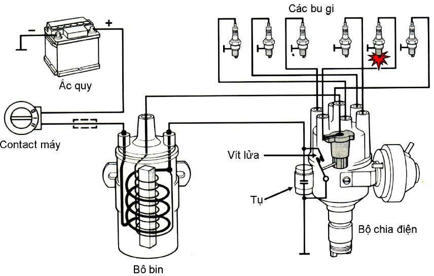
Hình 2.54: Sơ đồ cấu tạo hệ thống đánh lá»a thường.
-
Các bước tiến hà nh.
   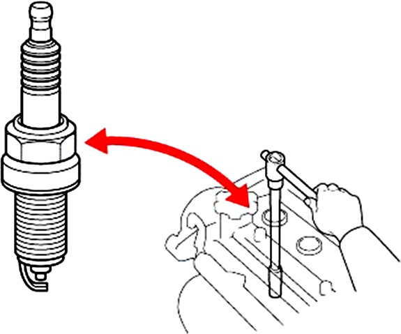
Bugi.
Để đảm bảo hiệu quả đánh lá»a bugi phải được là m sạch và thay thế định kỳ.
Tháo bugi.
Tháo dây cao áp.
Sá» dụng tuýp chuyên Φ16 hay Φ22 dụng tháo bugi ra khá»i động cơ.
Kiểm tra bugi.
Quan sát chuẩn đoán tình trạng kỹ thuáºt thông qua đầu bugi.
      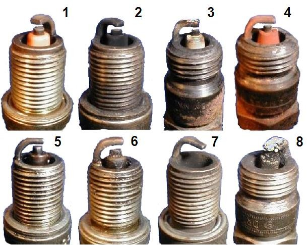
-
Thiếu xăng.
-
Thừa xăng.
-
Nóng.
-
Lá»a tốt.
-
DÁnh dầu.
-
Bám muội.
-
Há»ng điện cực.
-
Quá nóng.
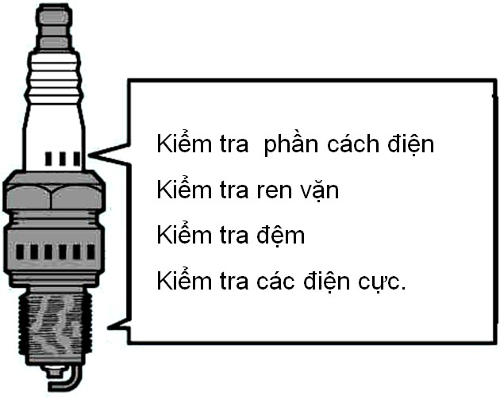
Kiểm tra tình trạng kỹ thuáºt bugi.
Là m sạch bugi.
Có thể sỠdụng máy là m sạch chuyên dụng sau khi là m sạch dùng khà nén thổi hết bụi bám trên bugi.

SỠdụng thước có độ dà y tiêu chuẩn kiểm tra khe hở bugi.
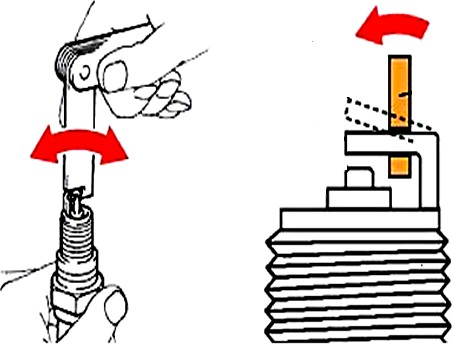
Điá»u chỉnh khe hở bugi cho phù hợp.
Bộ chia điện.
-
Tháo dây cao áp.
-
Tháo dây dẫn điện.
-
Tháo bộ chia điện ra khá»i động cơ.
-
SỠdụng chổi lông chuyên dùng, máy nén khà vệ sinh sạch sẽ bên ngoà i. Tháo nắp bộ chia điện và roto.

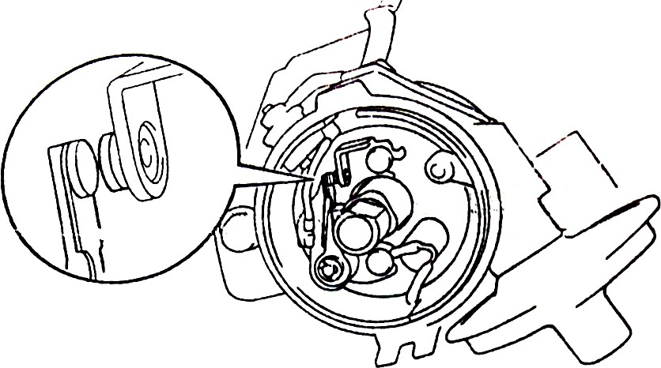
Kiểm tra tiếp điểm.
Kiểm tra bỠmặt tiếp điểm nếu thấy cháy rỗ thì rà lại hay thay mới.
Khi tiếp điểm bộ chia điện bị mòn, độ dà y còn dưới 0,5mm cần thay thế.
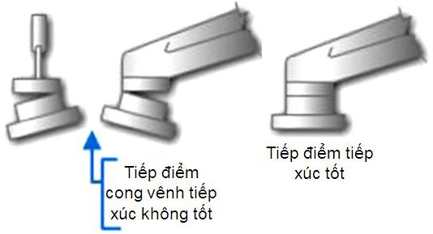
Kiểm tra bỠmặt tiếp điểm thấy tiếp xúc dưới 75% tiến hà nh uốn lại hay thay mới.
Muốn kiểm tra diện tÁch tiếp xúc sá» dụng băng giấy má»ng dưa và o giữa hai bá» mặt hai má vÁt đưa má vÁt vá» trạng thái đóng, sau đó lấy băng giấy ra ngoà i và vết in trên băng giấy đó chÁnh là diện tÁch tiếp xúc.
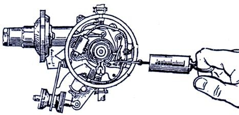
Kiểm tra lò xo tiếp điểm động.
Khi lò xo tiếp điểm động quá yếu (dùng lực kế kiểm tra) thay thế.
Tháo má vÁt.
Dùng tô vÁt 4 cạnh tháo dây dẫn, tháo 2 vÁt định vị tháo cụm má vÁt ra ngoà i.
Tháo bộ đánh lá»a sớm chân không.
Tháo ốc chặn lấy mâm má vÁt ra ngoà i.
      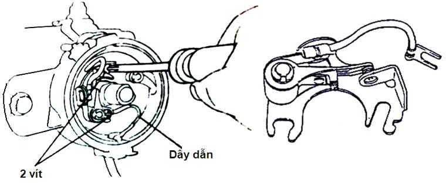
Kiểm tra độ rơ lá»ng của cam ngắt điện
      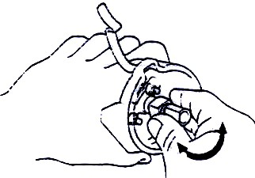
Dùng tay kiểm tra sự rơ lá»ng của cam ngắt điện.
Nếu phát hiện có sự rơ lá»ng tiến hà nh sá»a chữa thay thế.
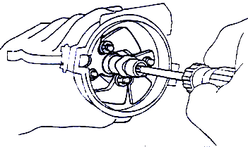
Tháo cam ngắt điện.
Tháo nút chăn mỡ ra, sau đó dùng tô vÁt 4 cạnh tháo vÁt đầu trục ly tâm, tháo cam ngắt điện.
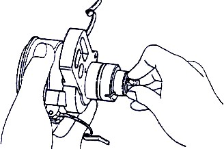
Kiểm tra trục ly tâm và vỠxem có mòn không, vỠcó bị nứt vỡ không.
Nếu phát hiện có sự rơ lá»ng tiến hà nh sá»a chữa thay thế.
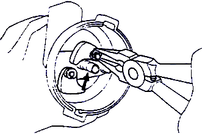
Kiểm tra cam li tâm xem có mòn nứt vỡ, kiểm tra lò xo li tâm.
Dùng kìm má» nhá»n tháo lò xo sau đó tháo quả văng li tâm.
Phát hiện hư há»ng thay thế. Tháo trục bộ chia điện.

Kẹp bộ chia điện lên ê tô.
Dùng dột chuyên dụng tháo chốt liên kết giữa bánh răng dẫn động và trục bộ chia điện, đưa bánh răng ra ngoà i.
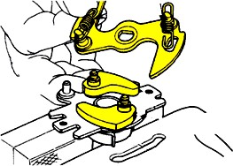
Tháo trục, giá điá»u chỉnh lò xo quả văng. Tiến hà nh bảo dưỡng thay thế nếu thấy hư há»ng.

Lắp lại các bộ pháºn ngược với quá trình tháo.
Điá»u chỉnh khe hở má vÁt.
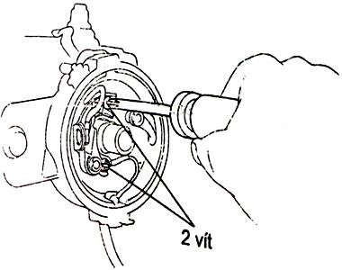
Xoay trục bộ chia điện cho cam ngắt điện đội vÁt mở tối đa.
Nới lá»ng hai vÁt của đĩa đỡ tiếp điểm.
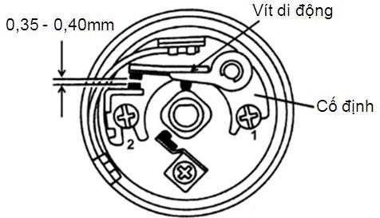
Đưa thước lá có độ dà y tiêu chuẩn và o điá»u chỉnh khe hở (Động cơ 4 xi lanh 0,45 mm. Động cơ 6 xi lanh 0,30 mm)
Bẩy vÁt di động qua lại và dùng căn lá để kiểm tra đúng khe hở.
Xiết chặt vÁt giữ vÁt cố định.
Tra dầu mỡ cho bộ chia điện.
Lắp roto
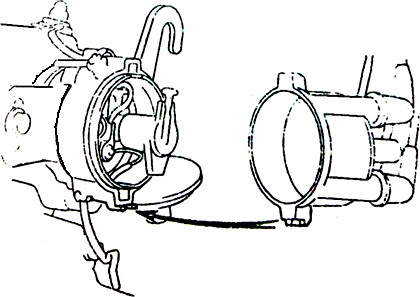
Lắp nắp bộ chia điện.
Bobin.
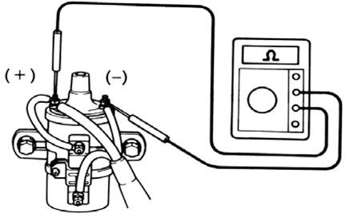
Kiểm tra điện trở cuộn sơ cấp. Dùng ôm kế đo cực (-) & (+) điện trở khoảng 1,3Ω -1,6Ω.
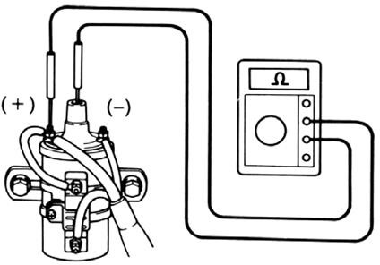
Kiểm tra điện trở cuộn thứ cấp.
Dùng ôm kế đo cực (-) & cực cao thế điện trở khoảng 10,7Ω - 14,5Ω trở.
Kiểm tra điện trở của bộ điện
Dùng ôm kế đo cực điện trở
khoảng 1,3Ω -1,5Ω.
Kiểm tra dây cao áp.
Điện trở một dây cao áp không quá 25 KΩ
Kiểm tra tụ điện
Dùng nguồn 110 v, bóng đèn để kiểm tra cách điện giữa các cực. Hoặc lấy tia cao áp mồi trực tiếp và o tụ, sau đó dùng dây dương của tụ quẹt ra mát. Nếu tia lá»a xanh, kèm theo tiếng kêu là tốt.
-
Phương pháp đặt lá»a và hiệu chỉnh.
Đặt lá»a là chúng ta đặt tia lá»a điện cao áp và o các xy lanh của động cơ như thế nà o để đảm bảo tia lá»a phóng ra hai cực của bu gi phải mạnh, đúng kỳ và phải đúng thá»i điểm, nhằm đảm bảo được công suất và hiệu suất của động cơ.
Xác định thá»i điểm nén của động cơ.
Để nháºn biết piston số 1 ở kỳ nén, chúng ta lựa chá»n một trong các biện pháp sau:
Gá đồng hồ đo áp suất nén và o lỗ bu gi của xy lanh số 1. Có thể dùng ngón tay ép chặt lỗ bu gi số 1. Quay trục khuỷu theo chiá»u quay cho đến khi có hơi ép lên đầu ngón tay.
Nếu nắp Ä‘áºy nắp máy đã được tháo: Quay trục khuỷu theo chiá»u quay sao cho xú pap nạp của xy lanh số 1 vừa đóng lại.
Đặt lá»a theo dấu.
-
Tháo bugi của xy lanh số 1.
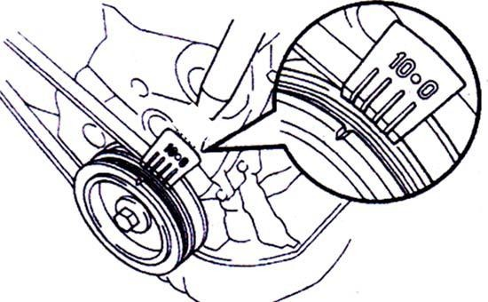
- Gá đồng hồ đo áp suất nén và o xy lanh số 1.
- Quay trục khuỷu theo chiá»u quay cho đến khi thấy kim đồng hồ đo bắt đầu dao động. Tiếp tục quay sao cho dấu trên pu li trục khuỷu ngay với điểm đánh lá»a sớm ở mặt trước của động cơ.
-
Lưu ý: Nếu dấu trên bánh đà , chúng ta cũng thực hiện tương tự.
- Đặt bộ chia điện và o động cơ và xoay vá» bộ chia điện theo cùng chiá»u quay của cam ngắt điện sao cho vÁt vừa ngáºm lại.
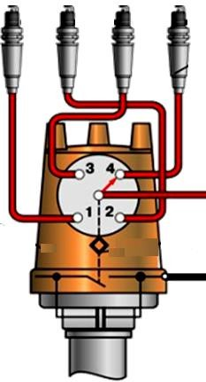
- Xoay vá» bộ chia điện theo ngược chiá»u quay của cam ngắt điện sao cho vÁt vừa chớm mở.
- Xiết chặt vỠbộ chia điện.
- Lắp nắp bộ chia điện cho đúng và chú ý vị trà đầu của rô to với cực bên của nắp bộ chia điện.
- Lắp dây cao áp từ cực bên của nắp bộ chia điện ngay với đầu con quay chia điện tới bugi của xy lanh số 1.
- Căn cứ và o chiá»u quay của con quay chia điện và lắp các dây cao áp còn lại theo thứ tự công tác của động cơ.
Đặt lá»a không dấu.
Đây là trường hợp dấu cân lá»a trên pu li hoặc trên bánh đà đã mất dấu hoặc bị sai lệch. Chúng ta thực hiện như sau.
- Tìm điểm chết trên của xy lanh số 1 bằng que dò hoặc căn cứ và o sự trùng điệp của xú pap.
- Đánh một dấu trên pu li trục khuỷu trùng với một điểm cố định trên thân máy.
- Khi có điểm chết trên, xác định thá»i điểm đánh lá»a sớm từ 50 đến 100 và  bảo đảm xy lanh số 1 ở cuối kỳ nén.
- Sau khi xác định thá»i điểm đánh lá»a sớm, các bước còn lại thực hiện như trường hợp cân lá»a có dấu.
Hiệu chỉnh.
Khởi động động cơ và giữ bướm ga cho động cơ nổ khoảng 1000 v/p, điá»u chỉnh lại thá»i điểm đánh lá»a như sau.
Nới hơi lá»ng vÁt giữ vá» bộ chia điện.
Xoay vỠbộ chia điện từ từ sao cho động cơ nổ êm (Nổ lớn nhất). Xiết chặt vỠbộ chia điện.
Lên ga đột ngột và nghe động cơ có kÁch nổ hay không. Nếu có tiếng gõ thì điá»u chỉnh thá»i điểm đánh lá»a trễ lại.
-
Kiểm tra - Chẩn đoán.
Thứ tự các bước tiến hà nh kiểm tra chẩn đoán hệ thống đánh lá»a được tiến hà nh như sau.
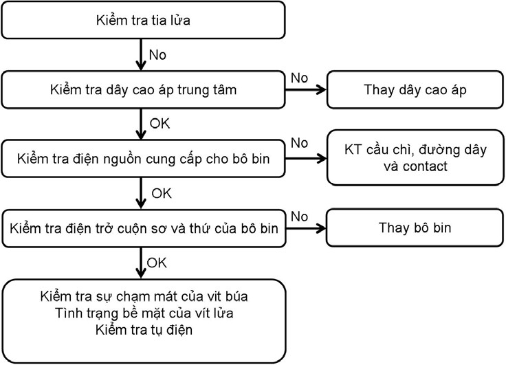
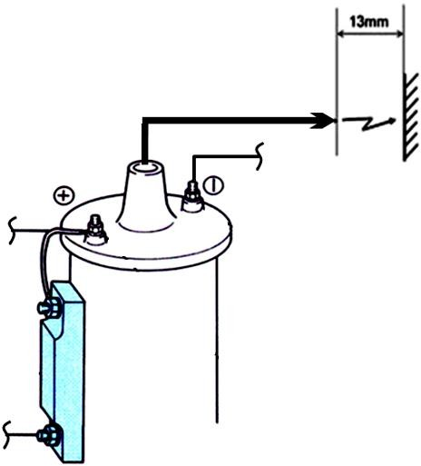
Bước 1: Kiểm tra tia lá»a điện cao áp
- Tháo dây cao áp từ cá»c trung tâm của nắp bộ chia điện.
- Để đầu dây cao áp cách mát khoảng 13 mm.
- Kiểm tra tia lá»a khi khởi động.
- Nếu không có hoặc quá yếu → Bước 2.
Bước 2: Kiểm tra điện trở dây cao áp trung tâm.

Bước 3: Kiểm tra điện nguồn cung cấp cho bô bin.
- Xoay công tắc máy on.
- Kiểm tra điện áp tại cực + bô bin: Khoảng 12 vôn.
- Nếu không có → Kiểm tra cầu chì, đường dây và công tắc máy.
Bước 4: Kiểm tra bô bin
Bước 5: Kiểm tra vÁt lá»a và tụ điện.
- Xoay contact máy off.
- Quay trục khuỷu cho cam ngắt điện đội vÁt búa mở ra.
- Đo điện trở giữa vÁt búa và mát: Điện trở vô cùng.
- Quay trục khuỷu cho vÁt búa ngáºm: Điện trở vÁt búa với mát là 0Ω.
- Nếu không đúng kiểm tra tình trạng của bá» mặt vÁt → Thay mới vit lá»a và tụ điện nếu cần thiết.
- Kiểm tra tụ điện.